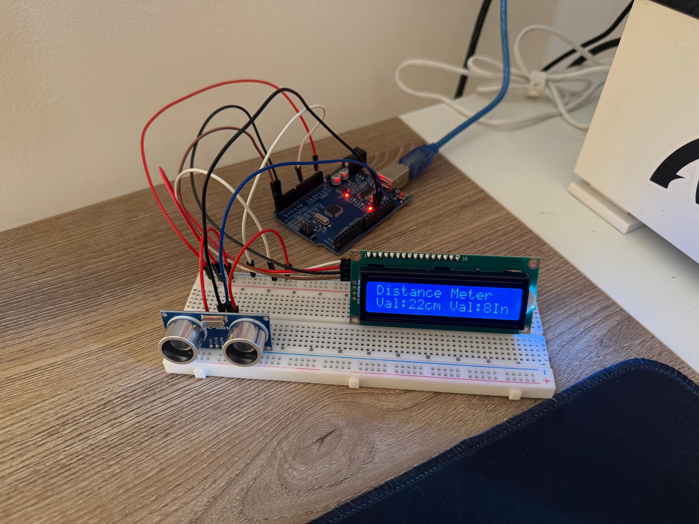
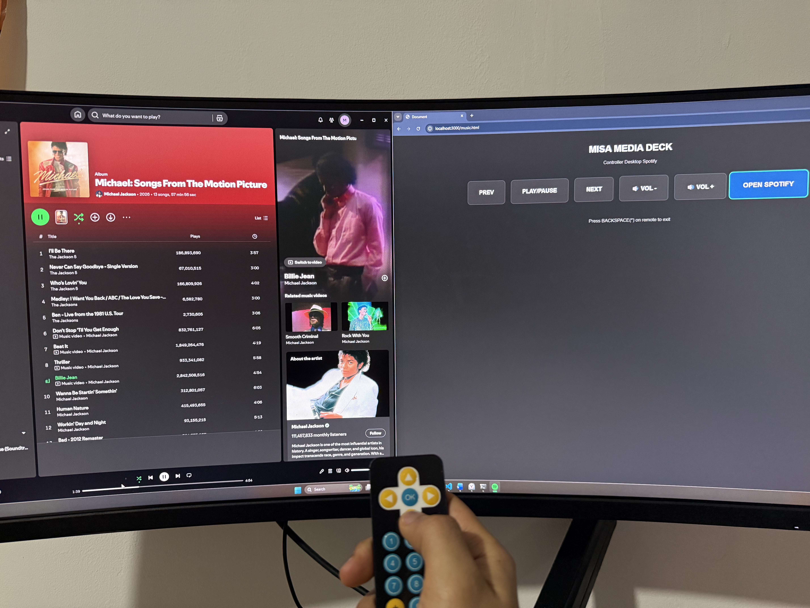

The Cyber-Nutrient Calculator is a sci-fi themed web application that calculates a user’s Total Daily Energy Expenditure (TDEE). Read More

A dashboard that allows a user to interact with their computer screen entirely via a physical infrared (IR) Arduino remote control. Read More